孖仔帮
公众号ID：twinsbang
关注
文|圆圈妈
网图|侵删
[SVG Icon]
[SVG Icon]
经常有人问我，为什么我带着俩娃还有时间码字，管理那么多妈妈群爸爸群，还能坚持一周一更。
我不是超人，没有三头六臂，这背后自然是少不了家人的帮助和支持，当然最重要的还是自己一挑二时，会善用育儿神器。
养育双胞胎这一路走来用过很多育儿神器，每个阶段都会有顺势而生的神器帮助我度过难关，真心感慨：没有哪个物品天生就是神器，用对了就是王者，错用了就是二氧化铁。
今天这篇要分享的育儿神器是喜马拉雅旗下的儿童版APP，如下图所示：
我对这款APP的评价是：以为是个青铜,结果是个王者，以至于后面越来越不满足免费资源，毫不犹豫花钱买会员看VIP。
这也是目前为止唯一一款让我再也不想自己关起门来白嫖，非要实名推荐给大家的一款APP。
都说2岁可怕，3岁恐怖，4岁崩溃，5岁呢？
石化！
圆圈兄弟目前就处于这种时常让人忍不住原地爆炸的阶段，天天追着我问这问那，当两个声音同时响起时，每一词每一句都让我感觉，这哪是两个儿子，分明是一屋子的乌鸦。
这款APP的强大之处在于，内容很丰富，涵盖每个孩子不同年龄段的各个兴趣点和知识点，有哄睡儿歌，唐诗宋词，绘本故事，英语启蒙，科普小课堂，人气动画片...
重点是光听不看就能让他们安静下来，尤其适合那些爱看动画片可是又怕伤眼睛的孩子。
今年5月份我们回到深圳后，受疫情影响，只能大门不出二门不迈，就全靠这款APP 支撑着那点乐趣，丰富多彩的音频视频，大大降低了他们对外面花花世界的饥渴。
更重要的是，我们仨都因此各得其所，他们一边听一边拼积木，我一边带娃一边码字，彼此互不干扰。
忍不住矫情一下：双胞胎长大了真好，用对了育儿神器真香。
APP内有圆圈喜欢的动画片音频，如超级飞侠，海底小纵队，粉红猪，瑞奇宝宝…有这些音频在，他们就不会一直吵着看动画片了。
最让我相见恨晚的是科普系列的音频。
5岁的圆圈求知欲特别强烈，经常问很多为什么，我总是答不上来，这款APP的科普系列就是我的专属Siri，想知道为什么？直接打开《十万个为什么》的音频即可，简单易懂，随时随地听个够。
还有一个很惊喜的学英语视频《Wow English》，是的，就是时下正风靡全球的英语趣味学习视频《Wow English》。
很早就听说这款英语教学视频有趣又好玩，一直没时间去官网下载，没想到这个APP竟然有哦，而且还是免费的。
看这部动画片，就像邀请了一个老外教师来到家里，圆圈特别喜欢看，一边看一边跟读，偶尔还哈哈大笑，好像他们真的看懂似的，那可是全英的真人+动画形式来进行沉浸式的课程啊，真的看懂了吗？
这款APP也有适合家长听的音频资源，如丁香妈妈|育儿辟谣100问，超级适合像我这种只有碎片化时间又想学习科学育儿知识的妈妈。
当他们午睡了，我在厨房里准备下午茶，就来一段李玫瑾|经典家庭教养课，从中找到点训娃启示，摸索出适合自己的养娃育儿之道。
好了，以上都是精华，还有一个压轴，那就是国家地理中文网与喜马拉雅儿童App联手推出，精心打造的全新专辑《惊奇放映室》。
为了让大家更好的了解这个产品，我们找国家地理中文网要来了预告片~
已关注
关注
重播 分享 赞
关闭
观看更多
更多
退出全屏
该视频已被发布者删除
视频详情
专辑共三个系列，分别是：
《国家地理：惊奇放映室系列之动物王国》
《国家地理：惊奇放映室系列之星际征程》
《国家地理：惊奇放映室系列之自然脉动》
3个版块总共110集的超长内容，视频全都来自国家地理资料库，中英双语解说......关键是不要钱，不要钱，不要钱，只要坚持打卡即可获得！
228元=2年喜马拉雅儿童APP会员权益+3张国家地理专辑（价值187元），自激活之日起400天内累计300天，即可全额返现。
全部返现支付宝，相当于免费畅听！
而且，还送两年的喜马拉雅儿童APP会员，有10W+各款适合0-15岁孩子的音频节目可以随心听，也有部分视频节目和大量电子绘本，比如上文提到的我们娘仨体验过的精华内容。
来，再敲下重点，这次国家地理专辑是活动独家限定的，限量40000份！拼手速的时候到了。
打卡方式非常简单，每天打开喜马拉雅儿童APP收听十分钟，不用签到不用转发朋友圈，即能自动算打卡成功！
400天里打开300天？可能吗？
绝对有可能！就凭我们家这两只对恐龙世界的狂热，3天内就一口气看完了动物王国系列，这已经远远不止300分钟了。
每天上午我就打开APP内的《十万个为什么》给他们听，下午等他们午睡差不多了就打开动画片把他们叫醒，晚上吃完晚饭后关上灯，打开投影仪，我们两大两小一起看国家地理惊奇放映室系列。
已关注
关注
重播 分享 赞
关闭
观看更多
更多
退出全屏
[SVG Icon][SVG Icon][SVG Icon][SVG Icon]切换到竖屏全屏退出全屏孖仔帮已关注
分享视频
，时长00:31
0/0
00:00/00:31
切换到横屏模式
继续播放
进度条，百分之0
播放
00:00
/00:31
00:31
倍速
全屏
倍速播放中
0.5倍 0.75倍 1.0倍 1.5倍 2.0倍
超清 流畅
您的浏览器不支持 video 标签
继续观看
有一款会帮你带双胞胎的app是什么样的体验
观看更多
转载
,
有一款会帮你带双胞胎的app是什么样的体验
孖仔帮已关注
分享点赞在看
已同步到看一看写下你的评论
视频详情
▲投屏到投影仪的画面▲
国家地理专辑有3个版块，动物王国，星际征程，自然脉动，圆圈最喜欢看的是星际征程。
国家地理出品的果然是精品，每一个画面都超震撼，投屏到投影仪看，如同身临其境般，我们四个窝在沙发上，大快朵颐地享受着这场视觉盛宴，真是一段非常惬意的亲子时光。
▲投屏到投影仪的画面▲
ohmy，我佛了，这画面太带感了！
圆圈说，像新奥尔良披萨
可能很少人知道国家地理，作为自然科学类杂志中当之无愧的“精英”，《国家地理》每年都会收到无数全球顶尖摄影师的照片，但选片率不到千分之一。只有最具代表性、最具美感，也最能体现世界之大的图文、声音，才会出现在《国家地理》的产品中。
自1907年出版第一本书至今，《国家地理》已经通过43种语言，触及遍布全球172个国家，超过7亿3千万人。
对《国家地理》来说，孩子们是最重要的观众与听众——孩子们拥有最旺盛的好奇心，通过对这个大世界的观察，正能激发这种好奇心，让他们从此爱上学习，爱上探索。
国家地理专辑清单如下：
《国家地理：惊奇放映室系列之动物王国》
《国家地理：惊奇放映室系列之星际征程》
《国家地理：惊奇放映室系列之自然脉动》
把纪录片拆解成学习元素
National Geographic 作为世界摄影师发表作品的梦想之地，拥有浩如烟海的珍贵影像资料。
为了让全球最棒的摄影师们带领孩子感受真实世界之美，每期节目均配有来自国家地理的精美图片，给孩子最为震撼心灵的视觉享受。
此外，每集音频配以形式可爱、逻辑明确、充满趣味的富媒体文本。
还有完整的学习评测，效果看得见！
这些内容看上去简单易懂，其中却大有门道——背靠着整整130年原汁原味的优质英文百科内容积累，用适合中国孩子的听讲方式，沉浸在地道的英文表达和诙谐的中文讲解中，足不出户领略世界的多样，感受宇宙的震撼！
作为世界摄影师发表作品的梦想之地，国家地理中文网的图像可以说来自全球最棒的摄影师们。每期节目都以原版英文视频为蓝本，呈现的是世界级水准的内容。
英语磨耳朵+知识科普完美结合
每个系列中英文视频都是拆开来的，听完中文打基础，再来遍英文磨耳朵，科普+英语一次学习。
在经历过有趣的故事之后，靠着“千分之一选片率”精选出的美妙影像，又将课程包含的英语知识“刻”入孩子们正完全发散的思维。
而当气氛安静之时，则可通过要点学习卡片，让孩子巩固记忆。
双语音频故事，配合英文视频，让孩子们沉浸在地道的英文表达和诙谐的中文讲解中，了解百科知识，感受英语氛围。
我根据圆圈哥俩的实际情况，走了段不寻常的路线去体验该课程。
第一遍，只看中文视频，不做题目，觉得题目有些还是比较难，他们的记忆力有限；
第二遍，看完中文视频，开始做题，此时他们对问题也很感兴趣，但部分还是答不出来；
第三遍，看完中文视频，继续做题，他们已经可以抢答了，我的问题还没念完，他们就说答案了，接着尝试英文视频，虽然听不懂，依然看得津津有味。
第四遍，只看英文视频，做口语练习；让英语磨耳朵与知识科普完美结合
我们已经坚持打卡到第15天了，要不要一起来哦。
也许妈妈们可能会担心，视频看久了对孩子的眼睛不好？
这个影响不大哦，每一集视频才4分钟不到，完整下来也不过20分钟左右，我个人认为是完全可以接受的！
另外，建议家长与孩子们一起看，免得他们问起时，你不会回答，会被孩子们鄙视的哦。
其它会员权益
除了国家地理的这个新专辑之外，成为喜马拉雅儿童APP会员还可以听10万+好听的音频内容，从哄睡儿歌，到识字、拼音、英语启蒙、古诗启蒙、科学STEAM，从小学语文数学，到经典文学、艺术、音乐、科普，应有尽有。
而且每月都有上新专辑，相当于给孩子买了一个2年的移动图书馆！坚持学还免费！
每天打开听10分钟就能获得全额返现，超级轻松，扫码下单手慢无~
再敲下黑板哈！
228元=2年喜马拉雅儿童APP会员权益+3张国家地理专辑（价值187元），自激活之日起400天内累计300天，即可全额返现。
全部返现支付宝，相当于免费畅听！
不用签到不用转发朋友圈，每天打开喜马拉雅儿童APP收听十分钟，即能自动算打卡成功！
限量40000份！快快抢购吧！
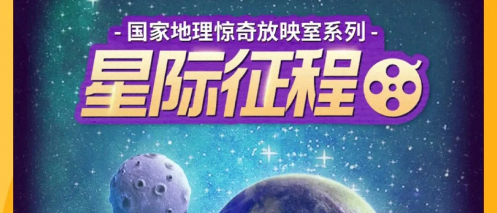
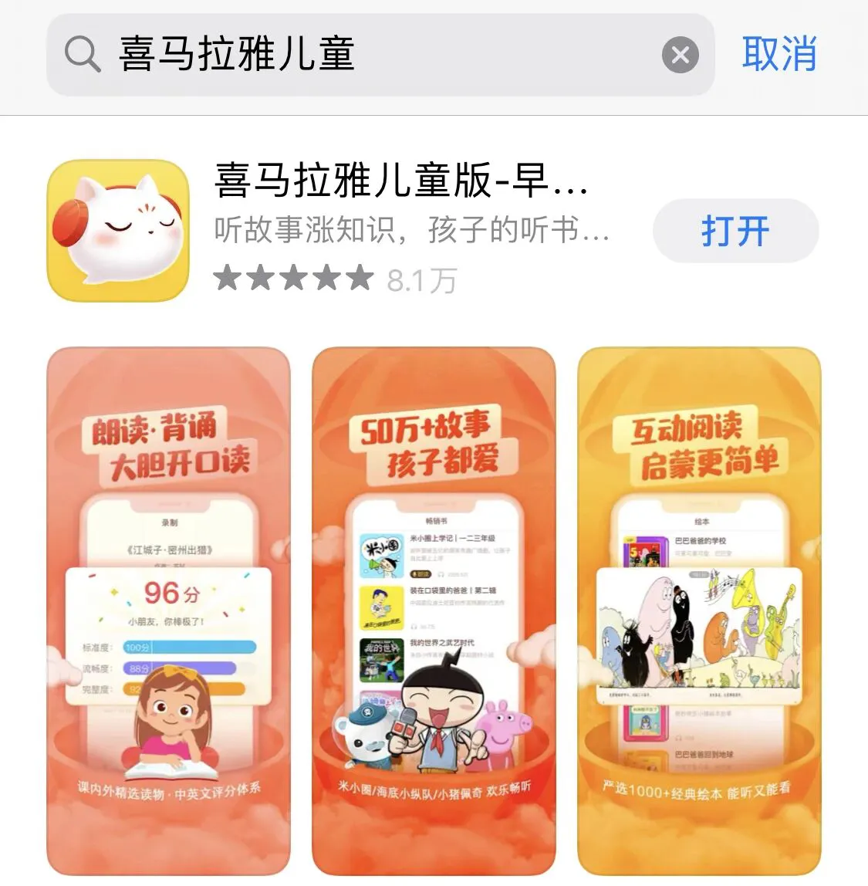
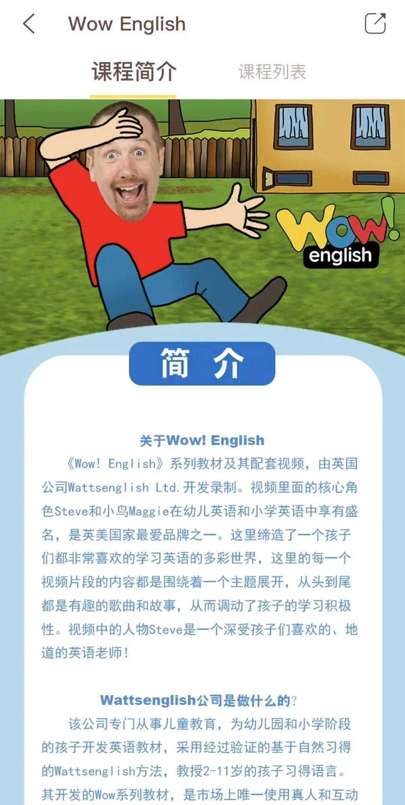
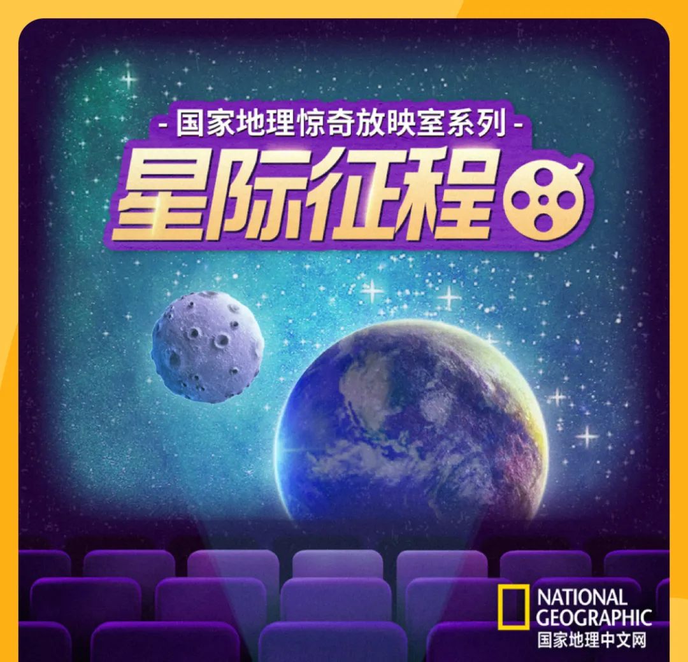
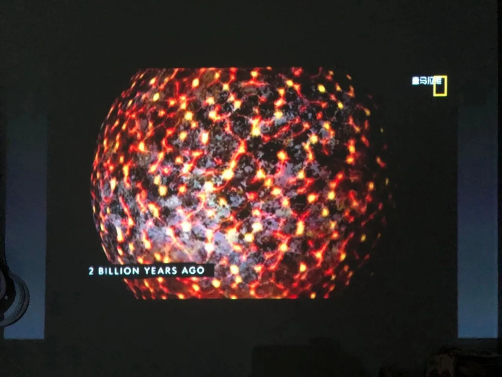
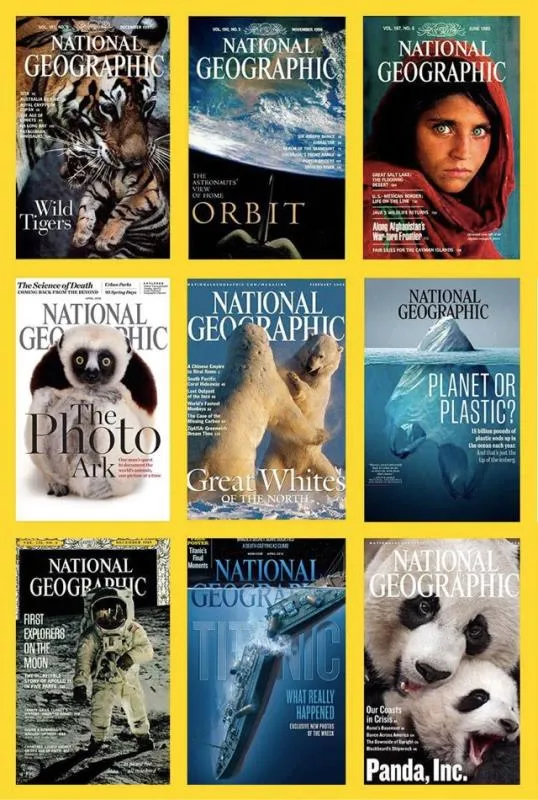
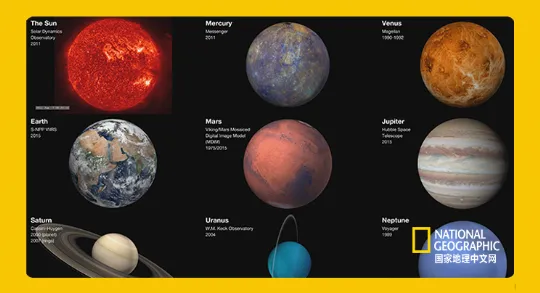
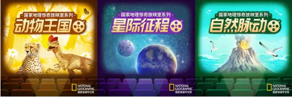
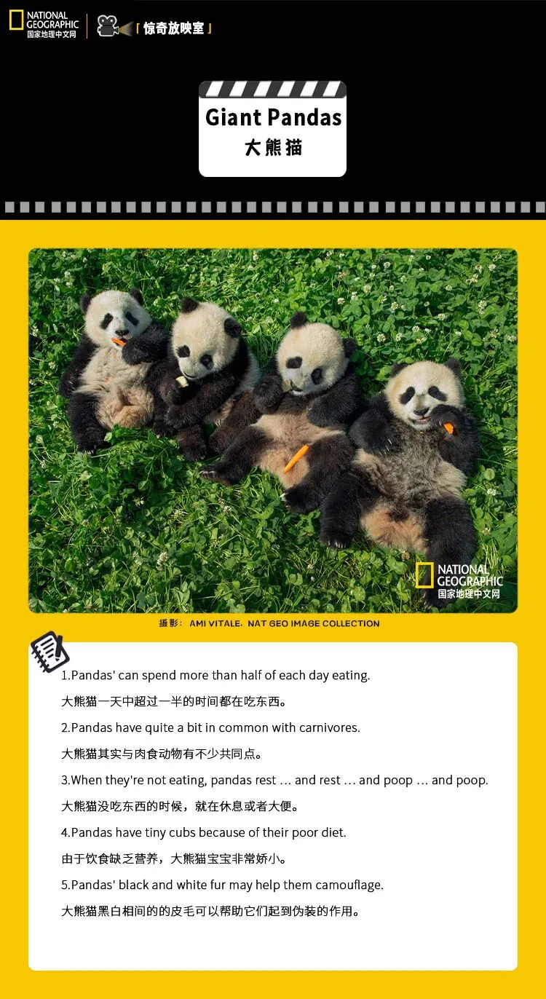
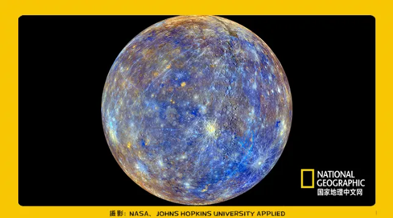
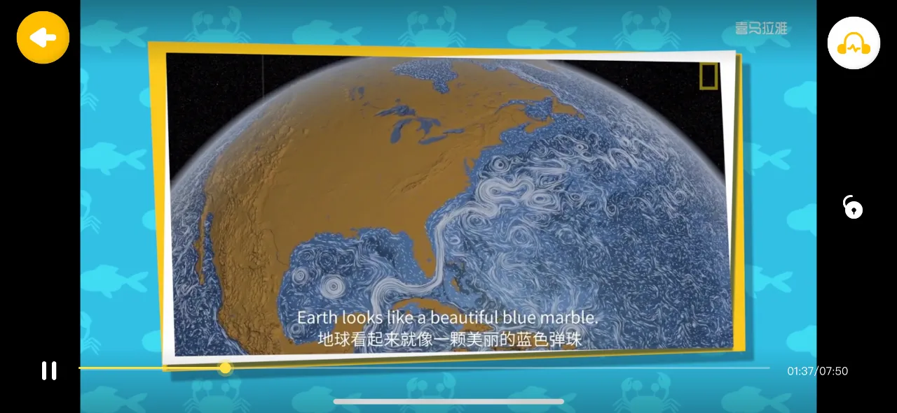
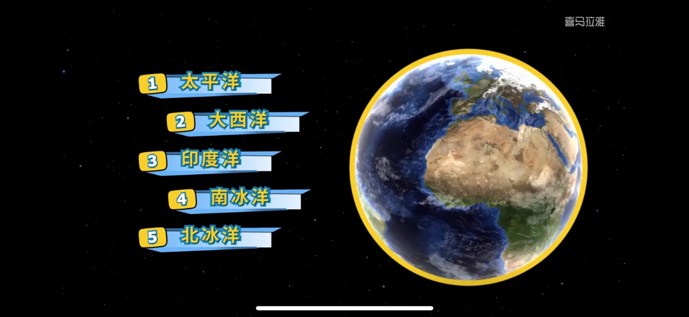
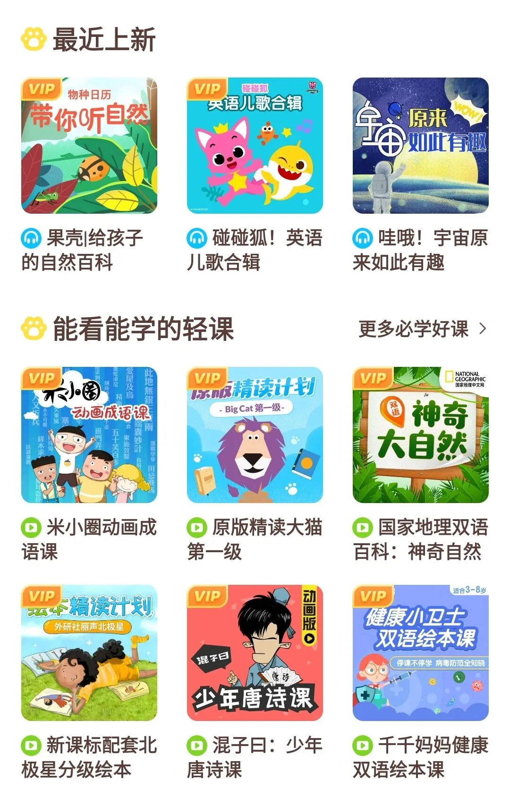